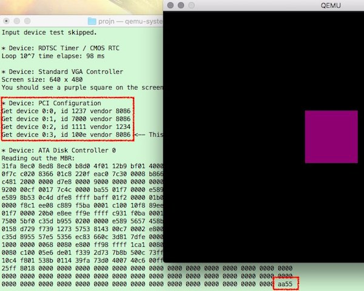

<html>
  <Head>
<meta http-equiv="Content-Type" content="text/html; charset=utf-8">

    
<link rel="stylesheet" href="../static/css/bootstrap.min.css"/>
<link rel="stylesheet" href="../static/css/bootstrap-theme.min.css"/>


    <link rel="stylesheet" href="../static/css/fonts/crmison.css"/>
    <link rel="stylesheet" href="../static/css/fonts/fira_code.css"/>
    <link rel="stylesheet" href="../static/css/fonts/ptsans.css"/>
    <link rel="stylesheet" href="../static/css/katex.min.css"/>
    <link rel="stylesheet" href="../static/css/wiki.css"/>
    <link rel="stylesheet" href="../static/css/codehilite.css"/>

    <script src="../static/js/jquery.min.js"></script>
    <script src="../static/js/bootstrap.bundle.min.js"></script>
    <script src="../static/js/katex.min.js"></script>
    
    

    <title>L0: 运行在裸机上的小游戏</title>
  </Head>
  <body>
   
   
<nav class="navbar fixed-top navbar-expand-lg navbar-dark bg-dark">
  <a class="navbar-barnd" href="index.html">Yanyan's Wiki</a>
  <div class="collapse navbar-collapse">
    <div class="navbar-nav">
      <a class="nav-item nav-link active" href="OS2020.html">
        
        操作系统 (2020)</a>
      <a class="nav-item nav-link active" href="SysLab2020.html">
        计算机系统综合实验 (2020)</a>
      <a class="nav-item nav-link active" href="ICS_NJU.html"> 加入我们</a>
    </div>
    <form class="form-inline" autocomplete="off">
      <input id="token-input" type="text" oninput="login();" maxlength="16"
        data-toggle="tooltip" data-placement="bottom"
        title="用于确定身份的作业提交 SHA-1 hash digest。更改后回车或刷新网页生效"></input>
    </form>
  </div>
</nav>

<center>
  <div class="article-container">
    <div class="article">
      <h1 id="l0">L0: 运行在裸机上的小游戏</h1>
<div class="fenced fenced-red">
<h4 id="2018422235959">截止日期：2018年4月22日23:59:59。</h4>
<p>使用<code>make submit</code>提交。迟交罚分同Mini Labs。</p>
</div>
<div class="fenced fenced-blue">
<h4 id="_1">概述</h4>
<p>大家已经玩过很多操作系统的API了——可以通过扫描目录和读取文件得到系统中的进程信息；能够用管道通信得到另一个进程的输出，从而观测另一个程序的系统调用；也可以偷偷在外面调用gcc，把编译好的二进制文件加载到当前进程的地址空间。</p>
<p>终于到了“自己动手写操作系统”的时候了。这个实验熟悉AbstractMachine的API，从“操作系统是一个C程序”的角度去理解实现操作系统所需的机制。</p>
<p>以及另外，让大家编一些(自己觉得好玩)的小游戏。之后在体系结构实验中，你自己实现了MIPS或RISC-V的CPU，你写的游戏就可以<strong>不经过任何修改</strong>在你的CPU上运行起来，很酷不是吗？</p>
</div>
<h3 id="_2">收到的作业</h3>
<p><table class="submissions"><tr><td></td><td></td><td></td><td></td><td></td><td></td><td></td></tr></table></p>
<h2 id="_3">背景</h2>
<p>“写个操作系统”好像一直都是个朝圣一般的事情，在知乎上也被很多人吹过，曾经我也觉得这是一件很装<math>\times</math>的事，好像自己很牛逼(但实际也没什么，就是写了几行代码而已)。当然写个操作系统，对理解操作系统是如何工作的，是有很大好处的——你能真正理解操作系统中的机制，然后就能很容易地学习各种策略(比如调度算法)。</p>
<p>因此你总是想去找点资料，比如《Orange's OS》，就会发现这个书大部分时间都不在讲操作系统，而是在讲与操作系统毫无关系的什么GDT是什么，IDT是什么，TSS是什么……当年做PA的时候被迫读过手册，但过了点时间以后，好像也忘记得差不多了。在花了很多时间把这些概念搞清楚以后，还没开始施展拳脚写真正的操作系统，书就结束了。当然更多的人是直接倒在了前面：无论讲解得多么好，都不可能在短时间内让你彻底理清x86手册。x86就是x86。</p>
<p>为什么大家会遇到这样的困难呢？虽然教科书上说了一万遍“<strong>机制与策略分离</strong>”，但在“写个操作系统”方面，机制和策略却没有很好地被分开。对着x86讲操作系统实在是没有必要：操作系统，说白了就一个C程序，我为什么非要去理解GDT, IDT, TSS？<strong>x86的确提供了足够的机制用来实现操作系统，但这不代表它提供了初学者实现操作系统的最佳机制</strong>。尤其是ISA通常都是硬件设计者兼顾上层软件需求和物理硬件实现难度时做出各种权衡得来的，我们的确没必要这样嘛。所以Top2的T大就做了个不错的选择：uCore系统运行在MIPS32上，这个体系结构学起来简单多了，没有什么GDT，有非常优雅的MMU。最近他们在大动干戈把系统移植到RISC-V上。</p>
<p>我们试着把机制与策略分离做得更彻底一点：能不能<strong>只用一套C API实现操作系统</strong>？我们想给这个问题Yes的答案，于是有了AbstractMachine，抽象的计算机，能代表处理器为实现操作系统提供的机制。</p>
<h2 id="_4">实验描述</h2>
<p>编写一个直接运行在AbstractMachine上(仅仅启用IOE，不使用ASYE)的C程序和它的库函数(如<code>memcpy</code>、<code>printf</code>等)，然后基于这些库函数和AM API编写一个任意的小游戏。</p>
<div class="fenced fenced-red">
<h4 id="_5">⚠️ 注意事项</h4>
<p>用<code>git clone https://github.com/NJU-ProjectN/oslab0.git</code>下载框架代码。代码会全程记录实验过程，请勿修改git记录相关的脚本，如果出现问题请和老师/助教联系。</p>
<p>本实验<strong>需要</strong>提交实验报告。将实验报告命名为<code>report.pdf</code>放在Makefile的相同目录。<code>make submit</code>将会启动提取实验报告，缺少实验报告的提交将被拒收。</p>
</div>
<p>在这个实验中，你可以做任何小游戏，哪怕只有几个像素点在屏幕上乱动也可以(就可以获得全部正确性分数，哪怕有bug)，只要满足以下条件：</p>
<ol>
<li>有肉眼可辨认的图形输出；</li>
<li>能使用键盘与游戏交互。</li>
</ol>
<p>此外，请你的代码尽可能地<strong>可移植</strong> (<code>-std=c99</code>)，例如不要使用x86的小端特性把<code>uint32_t *</code>强制类型转换成<code>uint8_t *</code>，也不要依赖于任何calling conventions——在实现<code>printf</code>时可以使用<code>stdarg.h</code>。这样你的游戏可能会被<strong>永久加入到展示库中</strong>，在多个平台被展示。所以在我们的AM二进制文件中没有提供ASYE的实现——在这个实验中，这样你的代码就能运行在<strong>没有中断/异常</strong>的处理器上。这帮助你们能在第一时间写完一个最简单的单周期CPU，并且接入相应的外设以后，就能玩起自己的游戏。</p>
<div class="fenced fenced-blue">
<h4 id="_6">实验报告需要包含什么？</h4>
<p>游戏的玩法和说明，这是最重要的。</p>
<p>其次，你用到的主要技术、在实验中认为做的比较好的地方，独到的心得体会、遇到的困难、如何解决。实验报告所占的评分比例极低(且除非有重大缺陷的报告都在此部分得到满分)，因此只写那些你想让助教/老师看到的内容，千篇一律的废话就不用了。</p>
</div>
<h2 id="_7">实验指南</h2>
<h3 id="_8">理解框架代码</h3>
<div class="fenced fenced-red">
<h4 id="_9">遇到编译错误了？</h4>
<p>因为编译到i386，所以需要32位的libc中的头文件。如果你是64位系统可能遇到编译通不过的情况，这时候你需要安装相应的库……你应该怎么安装呢？Google会告诉你答案。</p>
</div>
<p>代码里的主要文件有：</p>
<pre class="codehilite"><code class="language-text">Makefile
git-commit.sh - Git追踪用脚本，相关代码请勿修改
include/
  am.h - AM API
  amdev.h - AM设备API
  arch.h - x86体系结构相关的声明
am/
  mbr - x86的主引导扇区(用于加载内核)
  am-x86-qemu.a - AM API在x86上的实现
build/ - 编译结果目录
src/
  main.c - 一小段测试代码，包含I/O设备使用的例子</code></pre>


<p>所以操作系统实验很简单，就是写一个C程序——AM API利用底层硬件提供的<strong>机制</strong>，为C程序运行创建好了环境(代码、数据、堆栈、堆区)，然后C程序可以调用AM API (仍然是对底层硬件提供机制的封装)，来实现系统软件。</p>
<p>哦对了，这次的Makefile里有的<code>SRCS = $(shell find src -name "*.c")</code>，你可以随意往里面添加<code>.c</code>文件，更像是一个真正的工程了。</p>
<h3 id="_10">操作系统是如何运行的？</h3>
<p>你依然困惑，C程序是怎么直接在计算机硬件上运行的？让我们向后退一步：任何程序都是编译、链接得到的。所以应该去观察Makefile，看看最后可执行文件是如何生成的。</p>
<pre class="codehilite"><code class="language-bash">ld -melf_i386 -Ttext 0x00100000 -o kernel $(OBJS) am-x86-qemu.a
cat mbr kernel &gt; os.img</code></pre>


<p>所以这里最重要的部分就是<code>os.img</code>：这是一个文件，它的前512字节是<code>mbr</code>文件，之后是<code>kernel</code>的二进制文件。这就是一个磁盘镜像。</p>
<p>运行时，这个镜像文件会被传给QEMU，作为磁盘中的数据：</p>
<pre class="codehilite"><code class="language-bash">qemu-system-i386 -serial stdio os.img</code></pre>


<p>这个命令相当于模拟了一台计算机，计算机的串口输出到Linux终端，并且磁盘(ATA0)用<code>os.img</code>模拟。系统启动后，MBR中的bootloader会负责创建好C语言运行的环境，将二进制文件kernel加载并运行——嗯，虽然是个看起来挺复杂的过程，但对操作系统来说，它只是想要C程序运行。</p>
<div class="fenced fenced-blue">
<h4 id="mbr">MBR到底是什么？</h4>
<p>如果你想知道环境是怎么创建的，<a href="http://pdos.csail.mit.edu/6.828/xv6">xv6</a>包含了非常好的bootloader代码，地球上相当多的OS实验的bootloader都是基于它的(也包括我们的)。如果你有兴趣可以读一读。</p>
<p>首先，在x86平台，系统启动后的BIOS代码会将第一个启动盘(在我们的设置中就是ATA0，第一个磁盘)的前512字节(MBR)载入到0x7c00位置，然后跳转执行。</p>
<p>磁盘前512字节里是我们编写的主引导扇区的代码，这份代码将位于主引导扇区(MBR)之后的ELF文件解析并加载(内核的二进制文件)，主要完成以下任务构建C程序运行的环境：</p>
<ol>
<li>设置一个初始的堆栈。</li>
<li>使用BIOS中断完成显示设置(这样就不用去PCI总线上找麻烦了)。</li>
<li>从8086的实模式切换到保护模式，设置绕过GDT，但不启动分页。</li>
<li>加载内核代码和数据，完成bss段的清零。</li>
<li>MBR中的代码执行<code>((void (*)())elfhdr-&gt;entry)();</code>跳转到ELF文件指定的入口地址执行。</li>
</ol>
</div>
<h3 id="am-apis">AM APIs</h3>
<p>关于详细的AM行为，请参考<a href="AMSPEC.html">AM Specifications</a>。</p>
<h4 id="turing-machine">Turing Machine</h4>
<p>Turing Machine的API非常简单：除了一个物理内存<code>_heap</code>表示了一段<math>[st, ed)</math>的内存之外，只有两个简单得不能再简单的函数：</p>
<pre class="codehilite"><code class="language-c">void _putc(char ch);
void _halt(int code);</code></pre>


<p>但背后却是C程序如何在“裸机”上执行起来的过程，其中利用了很多计算机硬件为我们提供的<strong>机制</strong>。在此以x86-qemu为例讲述AM的实现：</p>
<ol>
<li><code>_putc</code>像串口写入字符(用最圡的端口I/O指令)，因此用<code>-serial stdio</code>选项启动qemu就能看到<code>_putc</code>打印的字符。</li>
<li><code>_halt</code>就是打印字符然后死循环，所以其实关闭得并不彻底。</li>
</ol>
<h4 id="ioe">IOE</h4>
<p>往屏幕上绘制一些数据；从键盘读出按键；向调试终端输出字符……这都是I/O设备做的。所以很自然地，我们也对I/O设备做出抽象。每个I/O设备都是一个结构体，有它的ID、名字、和<code>read</code>和<code>write</code>两个操作——就是这么简单。我们已经提供了和I/O设备交互的参考程序：</p>
<ol>
<li>从定时器里读出系统启动时间；</li>
<li>向屏幕上绘图；</li>
<li>扫描PCI总线上的设备；</li>
<li>把磁盘主引导扇区内容读出。</li>
</ol>
<p>看起来这些功能已经足够实现一个不错的操作系统了。</p>
<p>当然I/O设备的实现就五花八门了。比如键盘就很简单——在x86里直接读写键盘控制器对应的端口就行。PCI Configuration Space其实也很简单，从别的地方偷个代码来就行。总的来说，硬件提供了足够的机制，能让我们访问各种I/O设备，这就够了：I/O Extension里的AM设备其实相当于为设备编写了驱动程序；而对于PCI/ATA这些设备，IOE只是做了最简单的控制寄存器级的封装，你还需要为它们编写驱动程序。</p>
<h3 id="_11">实现游戏之前：实现库函数</h3>
<p>我们的测试程序用到了函数：<code>int printf(const char *, ...);</code>。我们建议大家用AM API构造属于自己的libc中常用的库函数(我们只是建议，不要求全部实现，但你会体会到实现的好处的——比如你需要<code>printf</code>调试的时候，没办法在字符终端上打印真是太痛苦了)：</p>
<pre class="codehilite"><code class="language-c">// string.h
void *memset(void *b, int c, size_t n);
void *memcpy(void *dst, const void *src, size_t n);
size_t strlen(const char* s);
char *strcpy(char *dst, const char *src);
char *strncpy(char *dst, const char *src, size_t n);
int strcmp(const char *s1, const char *s2);
int strncmp(const char *s1, const char *s2, size_t n);

// stdlib.h
void srand(unsigned int seed);
int rand();

// stdio.h
int printf(const char* fmt, ...);
int sprintf(char* out, const char* format, ...);
int snprintf(char* s, size_t n, const char* format, ...);

// assert.h
#ifdef NDEBUG
  #define assert(ignore) ((void)0)
#else
  #define assert(cond) \
    do { \
      if (!(cond)) { \
        printf(&quot;Assertion fail at %s:%d\n&quot;, __FILE__, __LINE__); \
        _halt(1); \
      } \
    } while (0)
#endif</code></pre>


<p>实现这些最基本的库函数，以及一些你认为必要的数据结构(甚至可以实现<code>malloc</code>/<code>free</code>)，它们都能在你写游戏的时候帮到你，之后你写操作系统内核的时候，库函数也是用得上的。</p>
<p>另外你也可以对设备访问做一些封装，这样就不用每次写出非常难看的代码用IOE API访问设备了：</p>
<pre class="codehilite"><code>uint32_t uptime(); // 系统启动的时间(ms)
int read_key(); // 读取一个按键
void draw_rect(uint32_t *pixels, int x, int y, int w, int h); // 在屏幕上绘制
void draw_sync(); // 同步屏幕
int screen_width(); // 获得屏幕的宽度
int screen_height(); // 获得屏幕的高度</code></pre>


<p>等实现了<code>printf</code>以后，就能正确运行我们的测试程序了(即便没有实现，也可以看到一部分运行的结果)：能看到屏幕上显示出“南大紫”的方块，以及系统中各个I/O设备的测试结果(即便<code>printf</code>只是输出格式字符串，也可以看到一定的效果)：</p>
<p><center></center></p>
<p>输入设备是键盘，所以测试程序没有测试(运行测试的时候没有任何按键)；时钟测试运行<math>10^7</math>次循环的时间是98ms；有一个<math>640\times480</math>的屏幕可以用来绘制；PCI控制器里能读取到总线上的设备，我们还看到了Intel e1000的网卡呢，看来真的能用来实现操作系统。</p>
<div class="fenced fenced-green">
<h4 id="_12">空循环</h4>
<p>如果你写<code>for (int i = 0; i &lt; 10000000; i++) ;</code>，在<code>-O2</code>编译选项下会被优化得什么也不剩的。</p>
<p>为什么测试程序里的空循环没有被gcc优化掉，在qemu中还消耗了几十ms的时间？</p>
</div>
<h3 id="_13">最后：游戏是最简单的</h3>
<p>游戏不过是个死循环：</p>
<pre class="codehilite"><code class="language-c">next_frame = 0;
while (1) {
  while (uptime() &lt; next_frame) ; // 等待一帧的到来
  while ((key = readkey()) != _KEY_NONE) {
    kbd_event(key);         // 处理键盘事件
  }
  game_progress();          // 处理一帧游戏逻辑，更新物体的位置等
  screen_update();          // 重新绘制屏幕
  next_frame += 1000 / FPS; // 计算下一帧的时间
}</code></pre>


<p>大家见过的LiteNES和仙剑奇侠传，都是这样的循环。</p>
<p>再比如(你想实现一个简单的)弹球游戏，你只需要维护弹球的坐标<math>x,y</math>和两个方向的速度<math>v_x, v_y</math>，然后每一帧更新即可。配上碰撞检测，那就是个很酷的弹球啦！</p>
<div class="fenced fenced-red">
<h4 id="_14">不要使用浮点数</h4>
<p>在x86-qemu里用是没问题的，但如果你想在你的MIPS32里实现IEEE754，我保证你会想吐血的。</p>
</div>
    </div>
  </div>
</center>

<div class="footer-bottom">
  <center>
    <div class="copyright"> © 2020 Yanyan Jiang, All rights reserved </div>
  </center>
</div>


    <script>
      $(function () {
        $('[data-toggle="tooltip"]').tooltip()
      })

      $("math").each(function() {
        var tex = $(this).text();
        var html = katex.renderToString(tex, {
          displayMode: $(this).attr('class') == 'block-math',
          throwOnError: false
        });
        $(this).replaceWith(html);
      });

      function get_token() {
        var match = document.cookie.match(new RegExp('(^| )token=([^;]+)'));
        if (match) return match[2];
        else return "";
      }

      var token = get_token();
      var hint = "token", box = $("#token-input");

      if (token == "") { box.val(hint); }
      else { box.val(token); }

      function login() {
        var token = box.val()
        document.cookie = 'token=' + token + '; expires=Fri, 31 Dec 9999 23:59:59 GMT;';
        if (token == '') {
          box.val(hint);
        }
      }
    </script>
  </body>
</html>